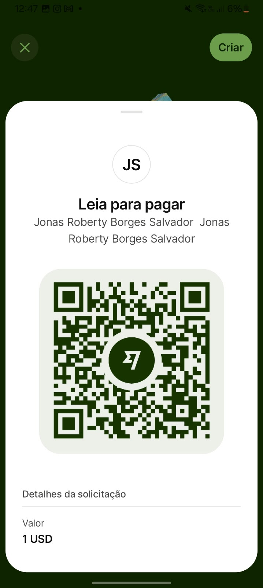
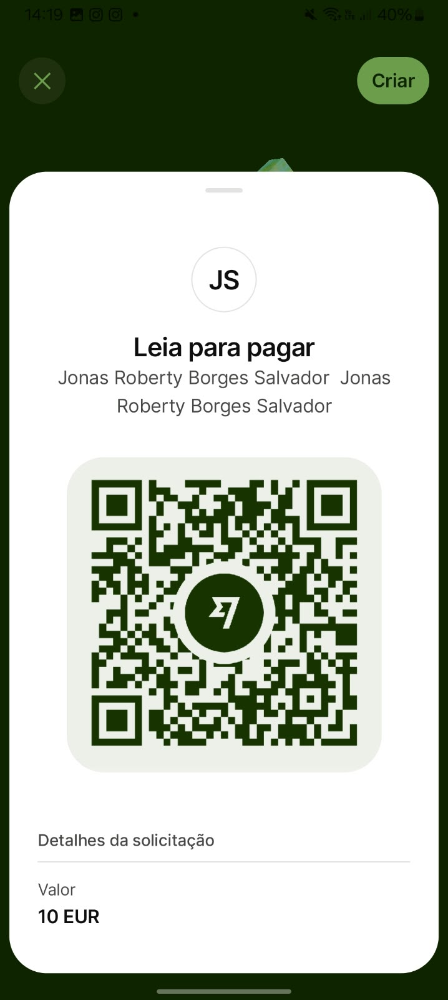
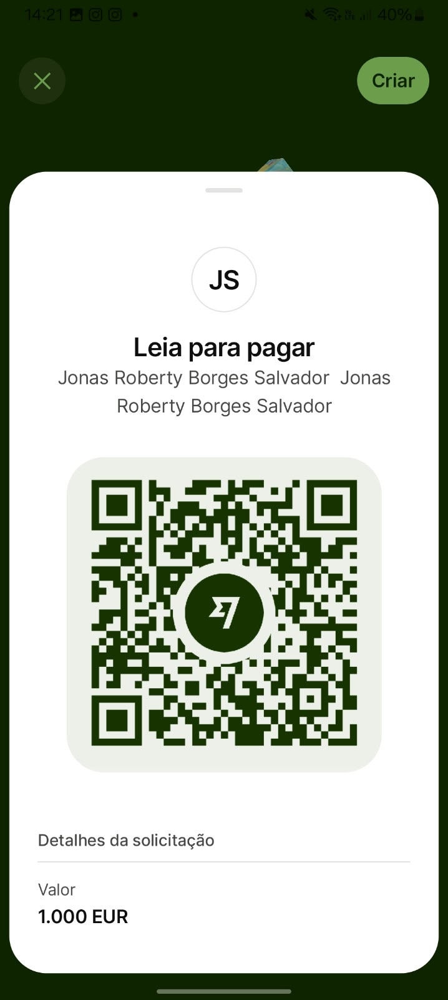

Johns Hopkins Vasculitis Center
A center focused on vasculitis, with information specifically about polyarteritis nodosa.
Learn about PAN and the center ↗My name is Jonas Roberty Borges Salvador. Since 2007, I have lived with polyarteritis nodosa (PAN), a rare disease that changed my body, my plans, and my life. I am now seeking an opportunity for specialized medical evaluation in the United States.
My greatest dream today is to be healthy enough to raise my children and be there as they grow.
Read my storySupport my journeyI am Brazilian, a father of two children, and someone who has always wanted to build a life through work, dignity, health, and freedom. My journey with PAN began in 2007, when swelling, pain, vomiting, and other symptoms changed my daily life. It took months of investigation to reach a diagnosis.
I lost weight, experienced kidney problems, high blood pressure, and the emotional toll of illness. For years, I continued working despite pain, medication, inflammation, and limitations. Skin wounds and infections brought additional suffering.
I share this not to ask for pity, but to be honest and transparent about what I have been through, what I still face, and why I am asking for help. I cannot promise a medical outcome, but I can keep looking for responsible options.
“I dream of a day without pain. Above all, I dream of many more years with my children.”
God blessed me with two beautiful children who show no signs of the disease. They are among the greatest joys of my life. I want to watch them grow, teach them, hug them, play with them, and help them find their own paths. My wife and family are part of this journey.
My goal is to contact recognized centers, share my medical history and test results, and explore realistic options for a second opinion, investigation, and care. Any decision will depend on case acceptance, medical assessment, costs, documentation, and travel arrangements.
A center focused on vasculitis, with information specifically about polyarteritis nodosa.
Learn about PAN and the center ↗A medical institution with expertise in rheumatology and complex conditions.
Official website ↗A multidisciplinary center where I hope to explore systemic vasculitis assessment options.
Official website ↗Observational study NCT02257866 on systemic vasculitis, including PAN. Participation is subject to eligibility screening.
View study and contacts ↗Transparency: these centers are potential contacts, not confirmed appointments. There is no promise of a cure, acceptance, funding, or stem cell transplantation for PAN. An NIH research study is not guaranteed treatment.
PAN is a rare form of vasculitis that causes inflammation in arteries and can affect the skin, nerves, kidneys, and other organs. Treatment depends on severity and specialist assessment. This information is educational and does not replace medical advice.
Reference: Johns Hopkins Vasculitis Center.
Real photographs from different stages of my medical journey. Some images may be disturbing and do not necessarily reflect my current condition.
Historical medical documents with identifying details covered. The files should be reviewed before public sharing to ensure no personal information remains visible.
I am seeking support for specialist medical evaluations, tests, travel, accommodation, and potential care-related expenses in the United States. Final costs will depend on the centers' responses, medical assessments, and actual expenses.
This is a fundraising target, not money already raised or a confirmed medical estimate. No cure or approved treatment is promised.
Choose your donation amount in your banking app. Verify the recipient's name before confirming.

Pix image unavailable. Use the key below.
Pix key
56b8e8a5-bc85-4738-b07b-643042672f28
Expected recipient: JONAS ROBERTY BORGES SALV
If your banking app displays another recipient, do not proceed.
These QR code images are already hosted in this repository. Select an amount and check all payment details before authorizing.



Check the currency, amount, and recipient in your payment app before confirming.




Commitment to transparency: the US centers are potential evaluation options; no appointments are confirmed. Donations cannot guarantee treatment or results. Donors should verify QR code details in their payment app.